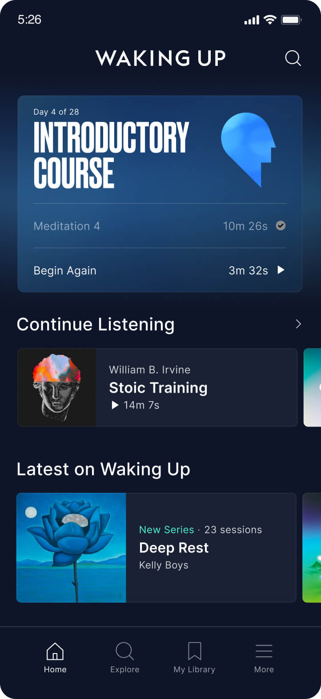

Welcome to Meditation Now. I'm Eben, and I want to share my journey with meditation and how it has positively impacted my life.
My journey with meditation began when I was struggling with OCD and anxiety. I knew I needed something to calm my mind, so I decided to try meditation. It was a game-changer for me, and I’ve been practicing regularly ever since. Initially, I used the Waking Up app by Sam Harris, where I committed to meditating for at least 10 minutes before work each day. This small but consistent practice helped me build a solid foundation for my mental well-being.
Now, I am passionate about sharing the benefits of meditation with others. Whether you're new to meditation or have been practicing for years, my goal is to help you discover how meditation can improve your physical, emotional, and mental health.
Meditation has been an incredible tool in my life, not only helping me manage my OCD and anxiety but also improving my focus, overall well-being, and perspective on life. I’ve personally experienced the physical, mental, and emotional benefits of meditation, and I want to pass on these insights to you.
Through consistent practice, meditation can offer immense benefits, including reduced stress, improved emotional regulation, and enhanced cognitive function. I encourage you to make meditation a part of your daily routine and experience the transformation it can bring into your life.
If you have any questions or would like to connect, feel free to reach out to me via email: eben.n@meditationnow.com.